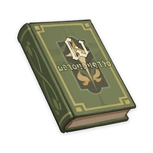

Teyvat & Unknown · Books & Literature
Vera's Melancholy
This twelve-volume cosmic adventure follows Vera and her companions from Delphi across the stars; two handwritten final manuscripts offer different endings, while the game leaves their authorship and real-world inspirations unresolved.

A Twelve-Volume Space-Fantasy Serial
Vera’s Melancholy is a twelve-volume science-fiction and fantasy serial. It begins in Delphi, where Vera is bored by village life and dreams about distant worlds. The ten earlier volumes follow her, her friend Sachi, the thousand-year-old wizard Ike, and the Princess Andro-Basilisks through cosmic adventures involving other worlds, rulers, monsters, and time.
The volumes mix a light-novel adventure with increasingly painful changes in the characters’ relationships. After an ancient sword leaves Vera gravely ill, the others spend years trying to save her; the later books return to Delphi and the cost of growing up and leaving home.
Two Manuscripts for the Final Volume
The collection now includes two handwritten manuscripts labeled Final Volume (Version I) and Final Volume (Version II), found in the Temple of Space’s Mahavipulya Chamber. Their titles are The Beast Calling Out for Love at the Heart of the World and A Plea for Love From the Heart of the World. The stories offer different possible resolutions for Vera, Sachi, Ike, and the Princess rather than one published ending.
The item descriptions say the author’s portrayal angered the real princess who inspired the Andromeda character. They also say one manuscript may be space debris recovered by the mistress’s sisters and the other may have been written by Hilda in protest at the original ending. The text does not identify which version has which origin.
Keep the Identity Clues Unresolved
The series’ description hints that its unnamed writer has published the same story on multiple worlds and faces a kill order from a galactic empire. Together with the two final manuscripts, those notes make the book unusually self-aware about a world beyond its fictional cast.
The sources do not name the writer, the ‘mistress,’ her sisters, or the real princess. The books invite comparison with other characters and events, but those identities remain theories unless a separate in-game source confirms them. Both endings should remain manuscripts of uncertain authorship, not be silently treated as one definitive biography.
This is an original CoreGG reading guide, not an official HoYoverse article or a reproduction of the game text. Source links below identify the records used so you can check the original context.
Sources & references
Check these sources for the original game text and reference trail.